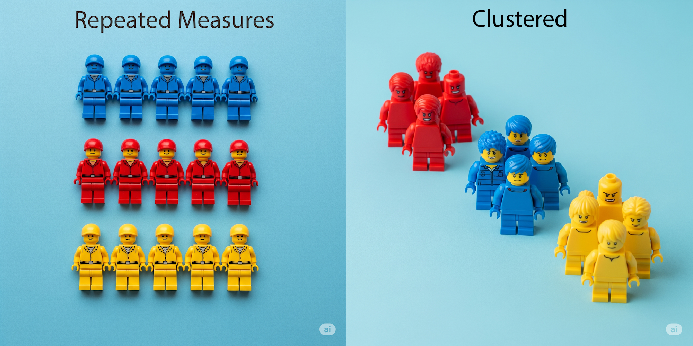

A broad overview of implications for power, sample size and precision.
Published
October 17, 2025
Today we’re going to take a fairly high-level look at the idea of correlated data. I have no doubt that many of you are already aware that correlated data need to be properly accounted for in the analyses that you do. And to that end you probably know that you need to use something like a linear mixed-model instead of a vanilla linear regression if a regression model is called for, but perhaps you don’t really understand why. What I am therefore hoping I can achieve with this post is to build a little intuition in to your stats thinking to help you recognise some of the implications of correlated data when it comes to power, sample size and precision, in your daily research.
1 What are Correlated Data?
Ok, so what are correlated data in the context that we’re talking about today? In very basic terms, think of them as groups or clusters of observations that share similarities with each other, so that observations within one group tend to be more alike than observations within another group. It’s important to keep in mind that this grouping or clustering structure is usually not of scientific interest in its own right, but arises as a natural consequence of how we sample our data. For example we may take multiple outcome measurements on a subject because we are interested in change over time, or we may measure some outcome of interest on a subject only once but recruit our subjects through GP clinics or hospitals. In both of these cases there is an implicit grouping or clustering structure - the individual subject in the first and the GP clinic/hospital in the second.

In the figure above I asked Google Gemini to generate a couple of images reflecting these concepts, using Lego figurines. It got the idea, but I couldn’t help but think there was something a little malign in the algorithm that day, as it appeared to be channelling North Korean military in the case of repeated measures on the same individual (left), and psychopaths in the context of different individuals grouped by a common factor (right). Anyway, I’m sure you get the idea…
1.1 What are Repeated Measures data?
Repeated measures data occur when you take multiple outcome measures from the same subjects (or experimental units), over time, space or condition. Now of these, data of the first type is probably the most common because many interesting research questions often involve a time component and discovering something about the trajectory of change in an outcome of interest over time - i.e. what we commonly refer to as longitudinal data. But repeated measures can also be made over ‘space’ - for example, we might be interested in comparing values on different measurement devices; OR under different conditions - treatment being a classic example here. In this context of repeated measures data, you can think of the individual, abstractly, as being the ‘cluster’.
1.2 What are Clustered data?
Clustered data differ from repeated measures in that outcome measures are taken from individuals usually just once, but where the individuals are related in some way to each other within a larger grouping structure. So when we talk about humans, clusters can be many things - families, schools, and GP clinics and hospitals are all common examples. But we can also talk about other grouping structures - animal litters and cages and bacterial plates in the lab; or cities and countries from a geographic perspective. If we return to people as being the experimental unit, in the context of clustered data, you can think of the individual as belonging to the cluster, rather than being the cluster as in the case of repeated measures.
1.3 Repeated Measures AND Clustered data.
You may come across other terms in your readings regarding correlated data and probably the two most common ones are hierarchical and nested - and these terms make sense when you think about it. Whether data are repeated measures or clustered, or a combination of both, the general idea is that observations exist within groups which then exist at different ‘levels’. The simplest grouping structure consists, by necessity, of just two levels but there can be more depending on the nature of the data. In the figure below I have made an example consisting of a 3-level hierarchy where we have repeated measures (level 1) nested within patients (level 2) which are further nested within hospitals (level 3).
1.4 Why do we care?
So why do we care about potential correlations in our data structure? Well, because in all likelihood (pardon the stats pun), you’ll be wrong if you don’t. A fundamental tenet in statistics is that data points are independent - in other words, knowing the value of one data point doesn’t inform you as to the value of any others. This assumption of independence is violated in the presence of repeated measures or clustering. In turn this can result in unreliable estimation because standard errors and p-values are incorrect - and they tend to be incorrect on the ‘too low’ side, leading to false positives and claims of statistical significance when in fact, none may actually exist. In practice we commonly see this when the naive analyst uses standard linear regression techniques, thus ignoring potential correlations, in data that are not independent. What one should be doing instead are using models that explicitly account for these correlation structures in the model specification - and that is most commonly the mixed-model where we can flexibly specify these correlations as random effects (Generalised Estimating Equations - GEE’s - are another option but account for the correlations in a different way, mathematically).
2 Some Basic Correlated Data Concepts.
There are some rare instances where we might not actually need a more complex mixed-model at all - although dare I say this is really an exception rather than the rule. In some cases, while a grouping structure exists, its effect is so weak that we can effectively treat the data as independent and leave the corresponding random effect out. In model terms this would essentially be a comparison between a mixed-model (accounting for potential correlations) and the simpler standard linear model (ignoring potential correlations). In practice we could test this simply by comparing the models in terms of likelihood ratios or fit criteria like the AIC, selecting the model with the ‘better’ fit. Now, the reason I am telling you about this is that the basis for these kinds of tests are related to the important idea of the intraclass - or intracluster - correlation, and that is something that we are going to discuss next.
2.1 Intraclass (cluster) correlation - ICC
The ICC (or rho by it’s Greek symbol) measures the relatedness of correlated data by comparing the between- and within-cluster variances. In other words:
Mathematically, the ICC is the ratio of the between-cluster to total variance (where the total variance is the sum of the between- and within-cluster variances). The value of the ICC ranges from 0 to 1; where an ICC of 0 means that observations within a group are as different as observations in other groups - that is, they are independent; and an ICC of 1 means that observations within a group are the same - that is, they are completely dependent. Another way to think about this is that when the ICC = 0, knowing the value of any one observation within a group, gives you no clue as the value of the other observations within that group - they are just as likely to different as observations belonging to other groups. Contrast this to the opposite extreme when the ICC = 1. Now, if we know the value of any one observation within a group, we automatically know the values of all other observations within that group! If this is not quite making sense yet, I will expound on this notion over the next few sections, and I hope that will make things clearer for you.
2.1.1 Relationship to ANOVA
Let’s build on the ideas presented above by considering how the ICC relates to a traditional analysis of variance (ANOVA) [For those who aren’t as familiar with ANOVA, both ANOVA and regression are part of the same statistical framework (the General Linear Model), with the former being a special case of the latter, and the latter, ultimately, being more flexible in its application]. To illustrate ANOVA, I am ‘borrowing’ the following image:
To work out the between-cluster variance we first calculate the mean of each cluster and then calculate the variance of those means. The within-cluster variance is a little different - here we calculate the variance of the observations within each cluster and then take an average of those variances.
Now, when we conduct an ANOVA all we are basically doing is comparing the between-group variance against the within-group variance. And if the between-group variance is larger than the within-group variance it tells us that the group means might differ in an important way (in other words that the signal is greater than the noise).
2.1.2 A different way to imagine the same thing
Let’s now consider the same concept visualised via abacus plots (again I am borrowing these images as I didn’t feel the need to re-invent the wheel). So how does knowledge of the between- and within-cluster variances allow us to ballpark what the ICC might be? In each plot below the vertical line represents a group of observations (so in each plot we have 20 groups each consisting of 4 observations). On the left we have a situation where the observations within a given group are as different as observations in other groups. So here the grouping structure doesn’t really matter. The between-cluster variance is therefore low relative to the within-cluster variance, and as a proportion of the total variance results in a small number divided by a bigger number leading to a low ICC. When you scan across that plot you can see that the points appear fairly randomly scattered.
Compare that to the plot on the right. Here we have the opposite situation where the observations within any one group are very similar to each other. In this case the grouping structure does matter. Now the between-cluster variance is high relative to the within-cluster variance, and as a proportion of the total variance results in a big number divided by a smaller number leading to a high ICC. Now when you scan across the plot you can see that the points are much more clustered together in their groups.
2.1.3 Give me something tangible
OK, thus far I’ve talked about ICC’s in a very abstract way, I know. But can we contextualise the concept in a real-world setting? You might be thinking - what are some actual examples of ICC’s? Well, I haven’t done an exhaustive literature search by any stretch, but my general sense is that there’s not a lot of information out there because researchers just don’t tend to publish these numbers, as they’re not usually of direct interest in themselves. With what I did find, ICC’s in bio-medical research tend to be low - correlations around 0.1 seem to come up a bit. But of course this can vary widely and it obviously depends on the research question and specific cluster factor of interest.
So just as a couple of examples, one paper looking at student performance outcomes found an ICC of 0.06 for class-room as a cluster factor. Another paper looking at diabetes and hypertension outcomes in primary-care medicine found ICC’s ranging from 0.01 to 0.48 with clinics as a cluster factor. And then another paper looking at heart failure with hospital as a cluster factor - ICC’s from 0.03 to 0.06 were documented.
Now, I also did try and do a search for MS related ICC’s and couldn’t really find anything out there unfortunately - but it could just be that I didn’t look hard enough. How about I leave that as a task for you…
2.2 …Brief Intermission…
All good and well you say. I now understand what the ICC is and what some reasonable values for the parameter might be. But I’m still not sure what this all means for me in my day-to-day research!
Fair question.
And the answer can essentially be distilled down to the following; power and/or sample size, and precision. Let’s talk about how each of these are related to the ICC, now.
2.3 Design Effect (DE) and Effective Sample Size (ESS)
If you aren’t already familiar with the Design Effect (DE) and Effective Sample Size (ESS), these concepts closely follow on from the ICC in providing a practical framework for the adjustment of a potential correlation structure in our data. Now, there are two points I want to make about this before we go any further:
The first is that this mostly applies to planning randomised controlled trials where subjects are recruited within larger groups (GP clinics/hospitals/etc) . This is what is typically known as a cluster randomised controlled trial. That’s not to say that sample size calculations aren’t important in observational research but we’re often at the mercy of the data that we have available and so we just tend to take what we can get (and we don’t get upset). The important point I want you to take away from this is that our study power may actually be less than what we imagine it to be if we’re only ever thinking about it in terms of the number of subjects that we have (based on standard sample size calculations ignoring correlations).
To that end, while these ideas also loosely translate to repeated measures data, in the context we are talking about them today, it is only for clustered data. In this case, and as you will soon see, increasing the ICC decimates the actual sample size that we have. Repeated measures data are a little different because the individual is the cluster (rather than being part of the cluster) and in this case we are always adequately powered by the actual subjects that we have, regardless of whether the ICC is high or not (a topic for another day - but please trust me for now).
Now, let’s get back on track. If you have clustering effects at play, because of potential similarities between subjects within a cluster, there is a net loss of data. In other words some patients bring little or even nothing new to the table in terms of unique information. What do I mean by this? Let’s take an example of 100 patients from 4 hospitals (25 from each) that we want to include in a study. Our sample size is 100 but it’s quite possible that our effective sample size (ESS) is less - in other words we have fewer patients than 100 from a statistical information perspective. It then follows that we might need to increase our actual sample size to greater than 100 patients, to compensate (I’ll give you some worked examples of this shortly). If the ICC is known (e.g. from a pilot study), it can be used at the design stage of the study to inform the sample size calculation.
The Design Effect (DE) is another important concept and forms part of the effective sample size calculation. Basically, the DE is an inflation factor that we multiply the actual sample size by to account for clustering effects. This gives us an adjusted sample size that contains the same amount of statistical information as our original sample size if no correlation structure were present.
\[ DE = 1 + \rho(m - 1) \]
\[ ESS = \frac{mk}{DE} \]
Alright, let’s look at these two formulae, but don’t let them intimidate you - they are really not that hard. The DE is just 1 plus the ICC multiplied by m minus 1 - where mis the average number of subjects in a cluster. Then the ESS is simply m multiplied by k - where k is the number of clusters - divided by the DE.
Let us know apply these two formulae in some worked examples. We’ll use the same idea of 100 patients from 4 hospitals and calcuate the ESS under 3 different ICC’s - a plausible value of 0.02; then we’ll consider either extreme - 0 if we assume complete independence and 1 if we assume complete dependence. My aim is just to get you thinking about a situation where you might have 100 patients, but you’ve also got some unrealised clustering which could reduce your ESS and give you less study power than you had imagined.
2.3.1 Worked Example 1 - ICC = 0.02
ICC = 0.02, m = 25, k = 4, n = 100
Ok, so our first example uses an ICC of 0.02. The DE works out at 1.48. The ESS in this case would then reduce to 68 patients. So while we have 100 patients, statistically only 68 patients worth are contributing information. We can then use the DE as an inflation factor to multiply by our original sample size to work out an adjusted sample size with equivalent study power in the presence of the clustering effects. And in this case we would need to recruit another 48 patients.
An ICC of 0 here effectively means that individuals within hospitals share no outcome similarities and represent completely independent observations - so, measuring one individual tells us nothing about the other individuals in that hospital.
So what happens if we assume independent data? This time the DE is 1 and the ESS remains the same as the original sample. We don’t need to adjust our sample size at all because the cluster structure doesn’t impact the individual observations in any way.
An ICC of 1 here now means that individuals within hospitals share identical outcomes and are completely dependent - this time, measuring one individual informs us about all individuals in that hospital. This is obviously an extremely unrealistic scenario.
Now the DE essentially becomes the cluster size and because every observation within a cluster is identical, the ESS collapses to the number of clusters. So we might have had 100 patients, but statistically we only have 4. And under these conditions we’d need to recruit 2500 patients to have the same study power as 100 completely independent patients.
\[ DE = 1 + 1(25 - 1) = 25 \]
\[ ESS = \frac{mk}{DE} = \frac{25 * 4}{25} = 4 \]
\[ ASS = n * DE = 100 * 25 = 2500 \]
2.4 Take Homes
Based on everything that we have learned thus far, here are a few important themes that might be useful to add to your stats knowledge toolkit for future reference:
When ICC = 0, the DE = 1 and the ESS = n. Observations within clusters are independent and the sample size doesn’t need to be adjusted.
When ICC = 1, the DE = m and the ESS reduces to the number of clusters. Observations within clusters are completely dependent and the sample size needs to be adjusted up by a factor of the DE.
A high k (number of clusters) and a low m (number of subjects within a cluster) give the smallest DE.
When designing studies, increasing the number of clusters (k) will improve study power more than increasing the number of subjects within a cluster (m).
More clusters are always better than larger clusters!
At the end of the day there might not be much you can actually do about your power/sample size when recruiting individuals from clinics, hospitals, etc. It is what it is and you take what you can get.
But it’s important to realise that when you have potential clustering effects in play, sample size and power are dependent on more than just the number of individuals in your study.
3 Simulations - Effect of ICC on Standard Errors
You’ll be pleased to know that we are almost finished. But, before we do, there is one final piece to this correlated data puzzle that I think is important to touch on. Remember when I said above that the implications for ignoring correlation stuctures in our data could be boiled down to power and/or sample size, and precision?
Power and sample size are certainly very important to consider when planning a study. But there’s another side to this coin, and that is how the ICC potentially affects our analysis at the end of the study. I stated earlier that our analysis could be wrong because our standard errors (SE’s) and p-values may be unreliable. This is what I’m referring to when I talk about precision - how ‘tightly’ a parameter is estimated. High precision translates to low SE’s, small p-values and narrow 95% CI’s. In contrast, low precision means that we have high SE’s, larger p-values and wider CI’s. Of course, we always like to see the former and not the latter when we run a regression model.
Let’s briefly explore this with a couple of simulations to hopefully consolidate these ideas. Here I have simulated 6 different data sets with varying ICC’s, cluster size (m), and number of clusters (k) (the code is provided at the end of this post if you want to do this yourself, but it’s not really necessary - you really just need the output). I then ran both a mixed-model - which accounts for any clustering effect; and a standard linear regression - which ignores any clustering effect, on each dataset. The aim of the exercise is to compare the SE’s (and p-values less importantly) across datasets.
3.1 Simulation 1 - ICC = 0.99, m = 10, k = 10
Let’s start off by looking at the last 3 rows of the table - where I have set the ICC very high. With 10 people in each of 10 clusters (i.e. n = 100) the SE is 4.71 and the p-value 0.06 with a mixed model. Compare this a much smaller SE of 1.43 and a very low p-value when we ignore the correlation by using a standard model. Note that this is incorrect and would lead us to the wrong conclusion. The mixed-model correctly adjusts for the fact that observations within each cluster are almost identical, whereas the standard model considers them all unique and independent.
3.2 Simulation 2 - ICC = 0.99, m = 100, k = 10
Now imagine we had access to 1000 patients instead of 100. In this scenario we still have 10 clusters but the cluster size had increased from 10 to 100. The SE for the mixed-model is basically the same - so increasing the cluster size hasn’t made much difference. But contrast that to running a standard regression where the SE has now decreased even further because the model now thinks it’s dealing with 1000 bits of unique information, rather than 100.
3.3 Simulation 3 - ICC = 0.99, m = 10, k = 100
What if we still had 1000 patients but this time we were able to increase the number of clusters keeping the cluster size the same - so now we’ve got 100 clusters each with 10 subjects. Now the SE has reduced in the mixed-model, indicating more power to separate the signal from the noise. This comes back to the ‘more clusters is better than bigger clusters’ take home that I mentioned before. The standard model hasn’t really changed that much as would be expected.
3.4 Simulations 4-6 - ICC = 0.1
If we now look at the scenario with a low ICC, we see a similar pattern in the SE reducing in our mixed-model when we increase the number of clusters. The main difference here is that the SE’s, in general, are much lower, because we are dealing with data that are much less correlated in the first place, so that each unique data point brings more new information to the statistical analysis.
4 Wrap-Up
I think that’s well and truly enough for today and apologies if you have fallen asleep at your keyboards. Correlated data are prevalent in bio-medical research and so I hope this post has given you some intuition as to the implications and also how to navigate the practicalities in your day-to-day work. Until next time…
Code
library(tidyverse)library(simstudy)library(lme4)library(lmerTest)library(sjstats)# Calculate the between variances for set target ICC's, given a within variance (here just set to 4)targetICC <-c(0.1, 0.99)setVars <-iccRE(ICC = targetICC, dist ="normal", varWithin =4)round(setVars, 4)# m = number of subjects in a cluster# k = number of clusters#++++++++++++++++++++++++++++++# ICC = 0.1 (m = 10, k = 10; n = 100)set.seed(7368888)# Create data# 1. Define df to create 'a' (precursor to y with mu = 0, var = 0.444) and 'size' (cluster size) variablesd <-defData(varname ="a", formula =0, variance =0.4444, id ="grp")d <-defData(d, varname ="size", formula =10, dist ="nonrandom")# 2. Define df to create formula for 'y' (outcome).a <-defDataAdd(varname ="y", formula ="5 + a", variance =4, dist ="normal")# 3. Replicate 10 times (each line is a cluster)dT <-genData(10, d)# 4. Expand dfdat <-genCluster(dtClust = dT, cLevelVar ="grp", numIndsVar ="size", level1ID ="id")# 5. Generate and add 'y' values based on Step 2.dat <-addColumns(a, dat)# Run mixed-modelmod <-lmer(y ~1+ (1|grp), data = dat)summary(mod)# Run standard model (ignore correlations)mod <-lm(y ~1, data = dat)summary(mod)# ICC = 0.1 (m = 100, k = 10; n = 1000)set.seed(7368888)# Create data# 1. Define df to create 'a' (precursor to y with mu = 0, var = 0.444) and 'size' (cluster size) variablesd <-defData(varname ="a", formula =0, variance =0.4444, id ="grp")d <-defData(d, varname ="size", formula =100, dist ="nonrandom")# 2. Define df to create formula for 'y' (outcome).a <-defDataAdd(varname ="y", formula ="5 + a", variance =4, dist ="normal")# 3. Replicate 10 times (each line is a cluster)dT <-genData(10, d)# 4. Expand dfdat <-genCluster(dtClust = dT, cLevelVar ="grp", numIndsVar ="size", level1ID ="id")# 5. Generate and add 'y' values based on Step 2.dat <-addColumns(a, dat)# Run modelmod <-lmer(y ~1+ (1|grp), data = dat)summary(mod)# Run standard model (ignore correlations)mod <-lm(y ~1, data = dat)summary(mod)# ICC = 0.1 (m = 10, k = 100; n = 1000)set.seed(7368888)# Create data# 1. Define df to create 'a' (precursor to y with mu = 0, var = 0.444) and 'size' (cluster size) variablesd <-defData(varname ="a", formula =0, variance =0.4444, id ="grp")d <-defData(d, varname ="size", formula =10, dist ="nonrandom")# 2. Define df to create formula for 'y' (outcome).a <-defDataAdd(varname ="y", formula ="5 + a", variance =4, dist ="normal")# 3. Replicate 10 times (each line is a cluster)dT <-genData(100, d)# 4. Expand dfdat <-genCluster(dtClust = dT, cLevelVar ="grp", numIndsVar ="size", level1ID ="id")# 5. Generate and add 'y' values based on Step 2.dat <-addColumns(a, dat)# Run modelmod <-lmer(y ~1+ (1|grp), data = dat)summary(mod)# Run standard model (ignore correlations)mod <-lm(y ~1, data = dat)summary(mod)#++++++++++++++++++++++++++++++# ICC = 0.99 (m = 10, k = 10; n = 100)set.seed(7368888)# Create data# 1. Define df to create 'a' (precursor to y with mu = 0, var = 396) and 'size' (cluster size) variablesd <-defData(varname ="a", formula =0, variance =396, id ="grp")d <-defData(d, varname ="size", formula =10, dist ="nonrandom")# 2. Define df to create formula for 'y' (outcome).a <-defDataAdd(varname ="y", formula ="5 + a", variance =4, dist ="normal")# 3. Replicate 10 times (each line is a cluster)dT <-genData(10, d)# 4. Expand dfdat <-genCluster(dtClust = dT, cLevelVar ="grp", numIndsVar ="size", level1ID ="id")# 5. Generate and add 'y' values based on Step 2.dat <-addColumns(a, dat)# Run modelmod <-lmer(y ~1+ (1|grp), data = dat)summary(mod)# Run standard model (ignore correlations)mod <-lm(y ~1, data = dat)summary(mod)# ICC = 0.99 (m = 100, k = 10; n = 1000)set.seed(7368888)# Create data# 1. Define df to create 'a' (precursor to y with mu = 0, var = 396) and 'size' (cluster size) variablesd <-defData(varname ="a", formula =0, variance =396, id ="grp")d <-defData(d, varname ="size", formula =100, dist ="nonrandom")# 2. Define df to create formula for 'y' (outcome).a <-defDataAdd(varname ="y", formula ="5 + a", variance =4, dist ="normal")# 3. Replicate 10 times (each line is a cluster)dT <-genData(10, d)# 4. Expand dfdat <-genCluster(dtClust = dT, cLevelVar ="grp", numIndsVar ="size", level1ID ="id")# 5. Generate and add 'y' values based on Step 2.dat <-addColumns(a, dat)# Run modelmod <-lmer(y ~1+ (1|grp), data = dat)summary(mod)# Run standard model (ignore correlations)mod <-lm(y ~1, data = dat)summary(mod)# ICC = 0.99 (m = 10, k = 100; n = 1000)set.seed(7368888)# Create data# 1. Define df to create 'a' (precursor to y with mu = 0, var = 396) and 'size' (cluster size) variablesd <-defData(varname ="a", formula =0, variance =396, id ="grp")d <-defData(d, varname ="size", formula =10, dist ="nonrandom")# 2. Define df to create formula for 'y' (outcome).a <-defDataAdd(varname ="y", formula ="5 + a", variance =4, dist ="normal")# 3. Replicate 10 times (each line is a cluster)dT <-genData(100, d)# 4. Expand dfdat <-genCluster(dtClust = dT, cLevelVar ="grp", numIndsVar ="size", level1ID ="id")# 5. Generate and add 'y' values based on Step 2.dat <-addColumns(a, dat)# Run modelmod <-lmer(y ~1+ (1|grp), data = dat)summary(mod)# Run standard model (ignore correlations)mod <-lm(y ~1, data = dat)summary(mod)#++++++++++++++++++++++++++++++# Sanity check between/within vals - allow for sampling variation(vars_between <- dat |>group_by(grp) |>summarise(means =mean(y)))(var_between <- vars_between |>summarise(var_between =var(means)) |>as.numeric())(vars_within <- dat |>group_by(grp) |>summarise(vars =var(y)))(var_within <- vars_within |>summarise(var_within =mean(vars)) |>as.numeric())var_between/(var_between + var_within)
Source Code
---title: "Correlated Data"date: 2025-10-17categories: [code, concept, modelling]image: "images/clustered_vs_repeated.png"description: "A broad overview of implications for power, sample size and precision."---Today we're going to take a fairly high-level look at the idea of correlated data. I have no doubt that many of you are already aware that correlated data need to be properly accounted for in the analyses that you do. And to that end you probably know that you need to use something like a linear mixed-model instead of a vanilla linear regression if a regression model is called for, but perhaps you don't really understand why. What I am therefore hoping I can achieve with this post is to build a little intuition in to your stats thinking to help you recognise some of the implications of correlated data when it comes to power, sample size and precision, in your daily research.# What are Correlated Data?Ok, so what are correlated data in the context that we're talking about today? In very basic terms, think of them as **groups** or **clusters** of observations that share similarities with each other, so that observations within one group tend to be **more alike** than observations within another group. It's important to keep in mind that this grouping or clustering structure is usually not of scientific interest in its own right, but arises as a natural consequence of how we sample our data. For example we may take multiple outcome measurements on a subject because we are interested in change over time, or we may measure some outcome of interest on a subject only once but recruit our subjects through GP clinics or hospitals. In both of these cases there is an implicit grouping or clustering structure - the individual subject in the first and the GP clinic/hospital in the second.{height="400" fig-align="center"}In the figure above I asked Google Gemini to generate a couple of images reflecting these concepts, using Lego figurines. It got the idea, but I couldn't help but think there was something a little malign in the algorithm that day, as it appeared to be channelling North Korean military in the case of repeated measures on the same individual (left), and psychopaths in the context of different individuals grouped by a common factor (right). Anyway, I'm sure you get the idea...## What are Repeated Measures data?Repeated measures data occur when you take multiple outcome measures from the same subjects (or experimental units), over time, space or condition. Now of these, data of the first type is probably the most common because many interesting research questions often involve a time component and discovering something about the trajectory of change in an outcome of interest over time - i.e. what we commonly refer to as longitudinal data. But repeated measures can also be made over 'space' - for example, we might be interested in comparing values on different measurement devices; OR under different conditions - treatment being a classic example here. In this context of repeated measures data, you can think of the individual, abstractly, as being the 'cluster'.## What are Clustered data?Clustered data differ from repeated measures in that outcome measures are taken from individuals usually just once, but where the individuals are related in some way to each other within a larger grouping structure. So when we talk about humans, clusters can be many things - families, schools, and GP clinics and hospitals are all common examples. But we can also talk about other grouping structures - animal litters and cages and bacterial plates in the lab; or cities and countries from a geographic perspective. If we return to people as being the experimental unit, in the context of clustered data, you can think of the individual as belonging to the cluster, rather than being the cluster as in the case of repeated measures.## Repeated Measures AND Clustered data.You may come across other terms in your readings regarding correlated data and probably the two most common ones are hierarchical and nested - and these terms make sense when you think about it. Whether data are repeated measures or clustered, or a combination of both, the general idea is that observations exist within groups which then exist at different 'levels'. The simplest grouping structure consists, by necessity, of just two levels but there can be more depending on the nature of the data. In the figure below I have made an example consisting of a 3-level hierarchy where we have repeated measures (level 1) nested within patients (level 2) which are further nested within hospitals (level 3).## Why do we care?So why do we care about potential correlations in our data structure? Well, because in all likelihood (pardon the stats pun), you'll be wrong if you don't. A fundamental tenet in statistics is that **data points are independent** - in other words, knowing the value of one data point doesn't inform you as to the value of any others. This assumption of independence is violated in the presence of repeated measures or clustering. In turn this can result in unreliable estimation because standard errors and p-values are incorrect - and they tend to be incorrect on the 'too low' side, leading to false positives and claims of statistical significance when in fact, none may actually exist. In practice we commonly see this when the naive analyst uses standard linear regression techniques, thus ignoring potential correlations, in data that are not independent. What one should be doing instead are using models that explicitly account for these correlation structures in the model specification - and that is most commonly the mixed-model where we can flexibly specify these correlations as random effects (Generalised Estimating Equations - GEE's - are another option but account for the correlations in a different way, mathematically).# Some Basic Correlated Data Concepts.There are some rare instances where we might not actually need a more complex mixed-model at all - although dare I say this is really an exception rather than the rule. In some cases, while a grouping structure exists, its effect is so weak that we can effectively treat the data as independent and leave the corresponding random effect out. In model terms this would essentially be a comparison between a mixed-model (accounting for potential correlations) and the simpler standard linear model (ignoring potential correlations). In practice we could test this simply by comparing the models in terms of likelihood ratios or fit criteria like the AIC, selecting the model with the 'better' fit. Now, the reason I am telling you about this is that the basis for these kinds of tests are related to the important idea of the *intraclass* - or *intracluster* - correlation, and that is something that we are going to discuss next.## Intraclass (cluster) correlation - ICCThe ICC (or rho by it's Greek symbol) measures the relatedness of correlated data by comparing the between- and within-cluster variances. In other words:$$\rho = \frac{\sigma_{(between)}}{\sigma_{(between)} + \sigma_{(within)}} = \frac{\sigma_{(between)}}{\sigma_{(total)}}$$Mathematically, the ICC is the ratio of the between-cluster to total variance (where the total variance is the sum of the between- and within-cluster variances). The value of the ICC ranges from `0` to `1`; where an ICC of `0` means that **observations within a group are as different as observations in other groups** - that is, they are independent; and an ICC of `1` means that **observations within a group are the same** - that is, they are completely dependent. Another way to think about this is that when the ICC = `0`, knowing the value of any one observation within a group, gives you no clue as the value of the other observations within that group - they are just as likely to different as observations belonging to other groups. Contrast this to the opposite extreme when the ICC = `1`. Now, if we know the value of any one observation within a group, we automatically know the values of all other observations within that group! If this is not quite making sense yet, I will expound on this notion over the next few sections, and I hope that will make things clearer for you.### Relationship to ANOVA Let's build on the ideas presented above by considering how the ICC relates to a traditional analysis of variance (ANOVA) \[For those who aren't as familiar with ANOVA, both ANOVA and regression are part of the same statistical framework (the General Linear Model), with the former being a special case of the latter, and the latter, ultimately, being more flexible in its application\]. To illustrate ANOVA, I am '[borrowing](https://www.datanovia.com/en/lessons/anova-in-r/)' the following image:To work out the between-cluster variance we first calculate the mean of each cluster and then calculate the variance of those means. The within-cluster variance is a little different - here we calculate the variance of the observations within each cluster and then take an average of those variances.Now, when we conduct an ANOVA all we are basically doing is comparing the between-group variance against the within-group variance. And if the between-group variance is larger than the within-group variance it tells us that the group means might differ in an important way (in other words that the signal is greater than the noise).### A different way to imagine the same thingLet's now consider the same concept visualised via abacus plots (again I am [borrowing](https://en.wikipedia.org/wiki/Intraclass_correlation) these images as I didn't feel the need to re-invent the wheel). So how does knowledge of the between- and within-cluster variances allow us to ballpark what the ICC might be? In each plot below the vertical line represents a group of observations (so in each plot we have `20` groups each consisting of `4` observations). On the left we have a situation where the **observations within a given group are as different as observations in other groups**. So here the grouping structure doesn't really matter. The between-cluster variance is therefore low relative to the within-cluster variance, and as a proportion of the total variance results in a small number divided by a bigger number **leading to a low ICC**. When you scan across that plot you can see that the points appear fairly randomly scattered.Compare that to the plot on the right. Here we have the opposite situation where the **observations within any one group are very similar to each other**. In this case the grouping structure does matter. Now the between-cluster variance is high relative to the within-cluster variance, and as a proportion of the total variance results in a big number divided by a smaller number **leading to a high ICC**. Now when you scan across the plot you can see that the points are much more clustered together in their groups.### Give me something tangibleOK, thus far I've talked about ICC's in a very abstract way, I know. But can we contextualise the concept in a real-world setting? You might be thinking - what are some actual examples of ICC's? Well, I haven't done an exhaustive literature search by any stretch, but my general sense is that there's not a lot of information out there because researchers just don't tend to publish these numbers, as they're not usually of direct interest in themselves. With what I did find, ICC's in bio-medical research tend to be low - correlations around `0.1` seem to come up a bit. But of course this can vary widely and it obviously depends on the research question and specific cluster factor of interest.So just as a couple of examples, one [paper](https://www.jclinepi.com/article/S0895-4356(23)00071-9/fulltext) looking at student performance outcomes found an ICC of `0.06` for class-room as a cluster factor. Another [paper](https://trialsjournal.biomedcentral.com/articles/10.1186/s13063-020-04349-4) looking at diabetes and hypertension outcomes in primary-care medicine found ICC's ranging from `0.01` to `0.48` with clinics as a cluster factor. And then another [paper](https://bmchealthservres.biomedcentral.com/articles/10.1186/1472-6963-14-84) looking at heart failure with hospital as a cluster factor - ICC's from `0.03` to `0.06` were documented.Now, I also did try and do a search for MS related ICC's and couldn't really find anything out there unfortunately - but it could just be that I didn't look hard enough. How about I leave that as a task for you...## ...Brief Intermission...All good and well you say. I now understand what the ICC is and what some reasonable values for the parameter might be. But I'm still not sure what this all means for me in my day-to-day research!Fair question.And the answer can essentially be distilled down to the following; power and/or sample size, and precision. Let's talk about how each of these are related to the ICC, now.## Design Effect (DE) and Effective Sample Size (ESS)If you aren't already familiar with the Design Effect (DE) and Effective Sample Size (ESS), these concepts closely follow on from the ICC in providing a practical framework for the adjustment of a potential correlation structure in our data. Now, there are two points I want to make about this before we go any further:1. The first is that this mostly applies to planning randomised controlled trials where subjects are recruited within larger groups (GP clinics/hospitals/etc) . This is what is typically known as a cluster randomised controlled trial. That's not to say that sample size calculations aren't important in observational research but we're often at the mercy of the data that we have available and so we just tend to take what we can get (and we don't get upset). The important point I want you to take away from this is that our study power may actually be less than what we imagine it to be if we're only ever thinking about it in terms of the number of subjects that we have (based on standard sample size calculations ignoring correlations).2. To that end, while these ideas also loosely translate to repeated measures data, in the context we are talking about them today, it is only for clustered data. In this case, and as you will soon see, increasing the ICC decimates the actual sample size that we have. Repeated measures data are a little different because the individual **is** the cluster (rather than being part of the cluster) and in this case we are always adequately powered by the actual subjects that we have, regardless of whether the ICC is high or not (a topic for another day - but please trust me for now).Now, let's get back on track. If you have clustering effects at play, because of potential similarities between subjects within a cluster, there is a **net loss of data**. In other words some patients bring little or even nothing new to the table in terms of unique information. What do I mean by this? Let's take an example of `100` patients from `4` hospitals (`25` from each) that we want to include in a study. Our sample size is `100` but it's quite possible that our **effective sample size (ESS) is less** - in other words we have fewer patients than `100` from a statistical information perspective. It then follows that we might need to increase our actual sample size to greater than `100` patients, to compensate (I'll give you some worked examples of this shortly). If the ICC is known (e.g. from a pilot study), it can be used at the design stage of the study to inform the sample size calculation.The Design Effect (DE) is another important concept and forms part of the effective sample size calculation. Basically, the DE is an inflation factor that we multiply the actual sample size by to account for clustering effects. This gives us an adjusted sample size that contains the same amount of statistical information as our original sample size if no correlation structure were present.$$ DE = 1 + \rho(m - 1) $$$$ ESS = \frac{mk}{DE} $$Alright, let's look at these two formulae, but don't let them intimidate you - they are really not that hard. The DE is just `1` plus the ICC multiplied by *m* minus `1` - where ***m*** **is the average number of subjects in a cluster**. Then the ESS is simply *m* multiplied by *k* - **where *k* is the number of clusters** - divided by the DE.Let us know apply these two formulae in some worked examples. We'll use the same idea of `100` patients from `4` hospitals and calcuate the ESS under `3` different ICC's - a plausible value of `0.02`; then we'll consider either extreme - `0` if we assume complete independence and `1` if we assume complete dependence. My aim is just to get you thinking about a situation where you might have `100` patients, but you've also got some unrealised clustering which could reduce your ESS and give you less study power than you had imagined.### Worked Example 1 - ICC = 0.02- ICC = `0.02`, *m* = `25`, *k* = `4`, *n* = `100`Ok, so our first example uses an ICC of `0.02`. The DE works out at `1.48`. The ESS in this case would then reduce to `68` patients. So while we have `100` patients, statistically only `68` patients worth are contributing information. We can then use the DE as an inflation factor to multiply by our original sample size to work out an adjusted sample size with equivalent study power in the presence of the clustering effects. And in this case we would need to recruit another `48` patients.$$ DE = 1 + 0.02(25 - 1) = 1.48 $$$$ ESS = \frac{mk}{DE} = \frac{25 * 4}{1.48} = 68 $$$$ ASS = n * DE = 100 * 1.48 = 148 $$### Worked Example 2 - ICC = 0- ICC = `0`, *m* = `25`, *k* = `4`, *n* = `100`An ICC of `0` here effectively means that individuals within hospitals share no outcome similarities and represent completely independent observations - so, measuring one individual tells us nothing about the other individuals in that hospital.So what happens if we assume independent data? This time the DE is `1` and the ESS remains the same as the original sample. We don't need to adjust our sample size at all because the cluster structure doesn't impact the individual observations in any way.$$ DE = 1 + 0(25 - 1) = 1 $$$$ ESS = \frac{mk}{DE} = \frac{25 * 4}{1} = 100 $$$$ ASS = n * DE = 100 * 1 = 100 $$### Worked Example 3 - ICC = 1- ICC = `1`, *m* = `25`, *k* = `4`, *n* = `100`An ICC of `1` here now means that individuals within hospitals share identical outcomes and are completely dependent - this time, measuring one individual informs us about all individuals in that hospital. This is obviously an extremely unrealistic scenario.Now the DE essentially becomes the cluster size and because every observation within a cluster is identical, the **ESS collapses to the number of clusters**. So we might have had `100` patients, but statistically we only have `4`. And under these conditions we'd need to recruit `2500` patients to have the same study power as `100` completely independent patients.$$ DE = 1 + 1(25 - 1) = 25 $$$$ ESS = \frac{mk}{DE} = \frac{25 * 4}{25} = 4 $$$$ ASS = n * DE = 100 * 25 = 2500 $$## Take HomesBased on everything that we have learned thus far, here are a few important themes that might be useful to add to your stats knowledge toolkit for future reference:- When ICC = `0`, the DE = `1` and the ESS = *n*. Observations within clusters are independent and the sample size doesn't need to be adjusted.- When ICC = `1`, the DE = *m* and the ESS reduces to the number of clusters. Observations within clusters are completely dependent and the sample size needs to be adjusted up by a factor of the DE.- A high *k* (number of clusters) and a low *m* (number of subjects within a cluster) give the smallest DE.- When designing studies, increasing the number of clusters (*k*) will improve study power more than increasing the number of subjects within a cluster (*m*).- **More clusters are always better than larger clusters!**- At the end of the day there might not be much you can actually do about your power/sample size when recruiting individuals from clinics, hospitals, etc. It is what it is and you take what you can get.- But it's important to realise that when you have potential clustering effects in play, sample size and power are dependent on more than just the number of individuals in your study.# Simulations - Effect of ICC on Standard ErrorsYou'll be pleased to know that we are almost finished. But, before we do, there is one final piece to this correlated data puzzle that I think is important to touch on. Remember when I said above that the implications for ignoring correlation stuctures in our data could be boiled down to power and/or sample size, and precision?Power and sample size are certainly very important to consider when planning a study. But there's another side to this coin, and that is how the ICC potentially affects our analysis at the end of the study. I stated earlier that our analysis could be wrong because our standard errors (SE's) and p-values may be unreliable. This is what I'm referring to when I talk about *precision* - how 'tightly' a parameter is estimated. High precision translates to low SE's, small p-values and narrow 95% CI's. In contrast, low precision means that we have high SE's, larger p-values and wider CI's. Of course, we always like to see the former and not the latter when we run a regression model.Let's briefly explore this with a couple of simulations to hopefully consolidate these ideas. Here I have simulated `6` different data sets with varying ICC's, cluster size (*m*), and number of clusters (*k*) (the code is provided at the end of this post if you want to do this yourself, but it's not really necessary - you really just need the output). I then ran both a mixed-model - which accounts for any clustering effect; and a standard linear regression - which ignores any clustering effect, on each dataset. The aim of the exercise is to compare the SE's (and p-values less importantly) across datasets.## Simulation 1 - ICC = 0.99, m = 10, k = 10Let's start off by looking at the last `3` rows of the table - where I have set the ICC very high. With `10` people in each of `10` clusters (i.e. n = `100`) the SE is `4.71` and the p-value `0.06` with a mixed model. Compare this a much smaller SE of `1.43` and a very low p-value when we ignore the correlation by using a standard model. Note that this is incorrect and would lead us to the wrong conclusion. The mixed-model correctly adjusts for the fact that observations within each cluster are almost identical, whereas the standard model considers them all unique and independent.## Simulation 2 - ICC = 0.99, m = 100, k = 10Now imagine we had access to `1000` patients instead of `100`. In this scenario we still have `10` clusters but the cluster size had increased from `10` to `100`. The SE for the mixed-model is basically the same - so increasing the cluster size hasn't made much difference. But contrast that to running a standard regression where the SE has now decreased even further because the model now thinks it's dealing with `1000` bits of unique information, rather than `100`.## Simulation 3 - ICC = 0.99, m = 10, k = 100What if we still had `1000` patients but this time we were able to increase the number of clusters keeping the cluster size the same - so now we've got `100` clusters each with `10` subjects. Now the SE has reduced in the mixed-model, indicating more power to separate the signal from the noise. This comes back to the 'more clusters is better than bigger clusters' take home that I mentioned before. The standard model hasn't really changed that much as would be expected.## Simulations 4-6 - ICC = 0.1If we now look at the scenario with a low ICC, we see a similar pattern in the SE reducing in our mixed-model when we increase the number of clusters. The main difference here is that the SE's, in general, are much lower, because we are dealing with data that are much less correlated in the first place, so that each unique data point brings more new information to the statistical analysis.# Wrap-UpI think that's well and truly enough for today and apologies if you have fallen asleep at your keyboards. Correlated data are prevalent in bio-medical research and so I hope this post has given you some intuition as to the implications and also how to navigate the practicalities in your day-to-day work. Until next time...```{r}#| eval: falselibrary(tidyverse)library(simstudy)library(lme4)library(lmerTest)library(sjstats)# Calculate the between variances for set target ICC's, given a within variance (here just set to 4)targetICC <-c(0.1, 0.99)setVars <-iccRE(ICC = targetICC, dist ="normal", varWithin =4)round(setVars, 4)# m = number of subjects in a cluster# k = number of clusters#++++++++++++++++++++++++++++++# ICC = 0.1 (m = 10, k = 10; n = 100)set.seed(7368888)# Create data# 1. Define df to create 'a' (precursor to y with mu = 0, var = 0.444) and 'size' (cluster size) variablesd <-defData(varname ="a", formula =0, variance =0.4444, id ="grp")d <-defData(d, varname ="size", formula =10, dist ="nonrandom")# 2. Define df to create formula for 'y' (outcome).a <-defDataAdd(varname ="y", formula ="5 + a", variance =4, dist ="normal")# 3. Replicate 10 times (each line is a cluster)dT <-genData(10, d)# 4. Expand dfdat <-genCluster(dtClust = dT, cLevelVar ="grp", numIndsVar ="size", level1ID ="id")# 5. Generate and add 'y' values based on Step 2.dat <-addColumns(a, dat)# Run mixed-modelmod <-lmer(y ~1+ (1|grp), data = dat)summary(mod)# Run standard model (ignore correlations)mod <-lm(y ~1, data = dat)summary(mod)# ICC = 0.1 (m = 100, k = 10; n = 1000)set.seed(7368888)# Create data# 1. Define df to create 'a' (precursor to y with mu = 0, var = 0.444) and 'size' (cluster size) variablesd <-defData(varname ="a", formula =0, variance =0.4444, id ="grp")d <-defData(d, varname ="size", formula =100, dist ="nonrandom")# 2. Define df to create formula for 'y' (outcome).a <-defDataAdd(varname ="y", formula ="5 + a", variance =4, dist ="normal")# 3. Replicate 10 times (each line is a cluster)dT <-genData(10, d)# 4. Expand dfdat <-genCluster(dtClust = dT, cLevelVar ="grp", numIndsVar ="size", level1ID ="id")# 5. Generate and add 'y' values based on Step 2.dat <-addColumns(a, dat)# Run modelmod <-lmer(y ~1+ (1|grp), data = dat)summary(mod)# Run standard model (ignore correlations)mod <-lm(y ~1, data = dat)summary(mod)# ICC = 0.1 (m = 10, k = 100; n = 1000)set.seed(7368888)# Create data# 1. Define df to create 'a' (precursor to y with mu = 0, var = 0.444) and 'size' (cluster size) variablesd <-defData(varname ="a", formula =0, variance =0.4444, id ="grp")d <-defData(d, varname ="size", formula =10, dist ="nonrandom")# 2. Define df to create formula for 'y' (outcome).a <-defDataAdd(varname ="y", formula ="5 + a", variance =4, dist ="normal")# 3. Replicate 10 times (each line is a cluster)dT <-genData(100, d)# 4. Expand dfdat <-genCluster(dtClust = dT, cLevelVar ="grp", numIndsVar ="size", level1ID ="id")# 5. Generate and add 'y' values based on Step 2.dat <-addColumns(a, dat)# Run modelmod <-lmer(y ~1+ (1|grp), data = dat)summary(mod)# Run standard model (ignore correlations)mod <-lm(y ~1, data = dat)summary(mod)#++++++++++++++++++++++++++++++# ICC = 0.99 (m = 10, k = 10; n = 100)set.seed(7368888)# Create data# 1. Define df to create 'a' (precursor to y with mu = 0, var = 396) and 'size' (cluster size) variablesd <-defData(varname ="a", formula =0, variance =396, id ="grp")d <-defData(d, varname ="size", formula =10, dist ="nonrandom")# 2. Define df to create formula for 'y' (outcome).a <-defDataAdd(varname ="y", formula ="5 + a", variance =4, dist ="normal")# 3. Replicate 10 times (each line is a cluster)dT <-genData(10, d)# 4. Expand dfdat <-genCluster(dtClust = dT, cLevelVar ="grp", numIndsVar ="size", level1ID ="id")# 5. Generate and add 'y' values based on Step 2.dat <-addColumns(a, dat)# Run modelmod <-lmer(y ~1+ (1|grp), data = dat)summary(mod)# Run standard model (ignore correlations)mod <-lm(y ~1, data = dat)summary(mod)# ICC = 0.99 (m = 100, k = 10; n = 1000)set.seed(7368888)# Create data# 1. Define df to create 'a' (precursor to y with mu = 0, var = 396) and 'size' (cluster size) variablesd <-defData(varname ="a", formula =0, variance =396, id ="grp")d <-defData(d, varname ="size", formula =100, dist ="nonrandom")# 2. Define df to create formula for 'y' (outcome).a <-defDataAdd(varname ="y", formula ="5 + a", variance =4, dist ="normal")# 3. Replicate 10 times (each line is a cluster)dT <-genData(10, d)# 4. Expand dfdat <-genCluster(dtClust = dT, cLevelVar ="grp", numIndsVar ="size", level1ID ="id")# 5. Generate and add 'y' values based on Step 2.dat <-addColumns(a, dat)# Run modelmod <-lmer(y ~1+ (1|grp), data = dat)summary(mod)# Run standard model (ignore correlations)mod <-lm(y ~1, data = dat)summary(mod)# ICC = 0.99 (m = 10, k = 100; n = 1000)set.seed(7368888)# Create data# 1. Define df to create 'a' (precursor to y with mu = 0, var = 396) and 'size' (cluster size) variablesd <-defData(varname ="a", formula =0, variance =396, id ="grp")d <-defData(d, varname ="size", formula =10, dist ="nonrandom")# 2. Define df to create formula for 'y' (outcome).a <-defDataAdd(varname ="y", formula ="5 + a", variance =4, dist ="normal")# 3. Replicate 10 times (each line is a cluster)dT <-genData(100, d)# 4. Expand dfdat <-genCluster(dtClust = dT, cLevelVar ="grp", numIndsVar ="size", level1ID ="id")# 5. Generate and add 'y' values based on Step 2.dat <-addColumns(a, dat)# Run modelmod <-lmer(y ~1+ (1|grp), data = dat)summary(mod)# Run standard model (ignore correlations)mod <-lm(y ~1, data = dat)summary(mod)#++++++++++++++++++++++++++++++# Sanity check between/within vals - allow for sampling variation(vars_between <- dat |>group_by(grp) |>summarise(means =mean(y)))(var_between <- vars_between |>summarise(var_between =var(means)) |>as.numeric())(vars_within <- dat |>group_by(grp) |>summarise(vars =var(y)))(var_within <- vars_within |>summarise(var_within =mean(vars)) |>as.numeric())var_between/(var_between + var_within)```